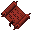
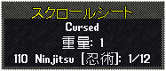
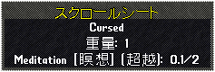
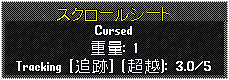

スクロールシート
UOSAで作成できるようになったスクロールシートについて、作成方法から紹介します。
１．作成方法
（１） wood pulp [木のパルプ] の作成
wood pulp [木のパルプ] の作成
wood pulp [木のパルプ]は、料理スキルを使い作成します（作成メニュー＞仕込み）。
作成に必要な材料は以下の2つです。また、forgeなどの熱源が必要です。
 bark fragment×1 ： 伐採スキル100.0のキャラクターが伐採したとき、木材とともに採取できる場合があります。
bark fragment×1 ： 伐採スキル100.0のキャラクターが伐採したとき、木材とともに採取できる場合があります。- water×1杯分 ： 酒場などにいるNPCが販売しています。
必要スキルは60.0で、スキル85.0以上で100％の作成成功率となります。
（２） scroll binder [スクロールシート]の作成
scroll binder [スクロールシート]は、書写スキルを使い作成します（作成メニュー＞その他）。
作成には wood pulp [木のパルプ]が1つ必要です。
必要スキルは75.0で、スキル100.0で100％の作成成功率となります。
scroll binder [スクロールシート]はCursed属性があり、保険をかけることはできません。
２．scroll binder [スクロールシート]の仕様
（１）適用範囲
scroll binder [スクロールシート]は、下記の特別なスクロールを登録することができます。一定数束ねることで、
- スキル上限を105、110および115にするパワースクロール。同じスキルの同強度を一定数束ねます。
- ステータス合計の上限を5、10、15および20加算するステータススクロール。同強度を一定数束ねます。
- スキルを一定値上昇させる、 scroll of transcendence [超越のスクロール]。同じスキルで束ねます。
（２）使い方
scroll binder [スクロールシート]の使い方は下記のとおりです。
- スクロールシートをダブルクリックします。
- 束ねたいスクロールをターゲットに指定します。
- 指定したスクロールおよび強度がスクロールシートに登録されます（画像参照）。
- パワースクロールおよびステータススクロールは一定数束ねることで、1ランク上のスクロールになります。
超越のスクロールは束ねたものに表記された上昇値の合計が丁度2.0または5.0以上となったとき、上昇値2.0または5.0の超越のスクロールとなります。
 パワースクロールを登録
 超越のスクロールを登録（累積2.0未満）
 超越のスクロールを登録（累積2.1〜5.0）
パワースクロールおよびステータススクロールのランクアップに必要な枚数
- パワースクロール105 × 8枚 → パワースクロール110
- パワースクロール110 × 12枚 → パワースクロール115
- パワースクロール115 × 10枚 → パワースクロール120
- ステータススクロール +5 × 6枚 → ステータススクロール +10
- ステータススクロール +10 × 8枚 → ステータススクロール +15
- ステータススクロール +15 × 8枚 → ステータススクロール +20
- ステータススクロール +20 × 5枚 → ステータススクロール +25